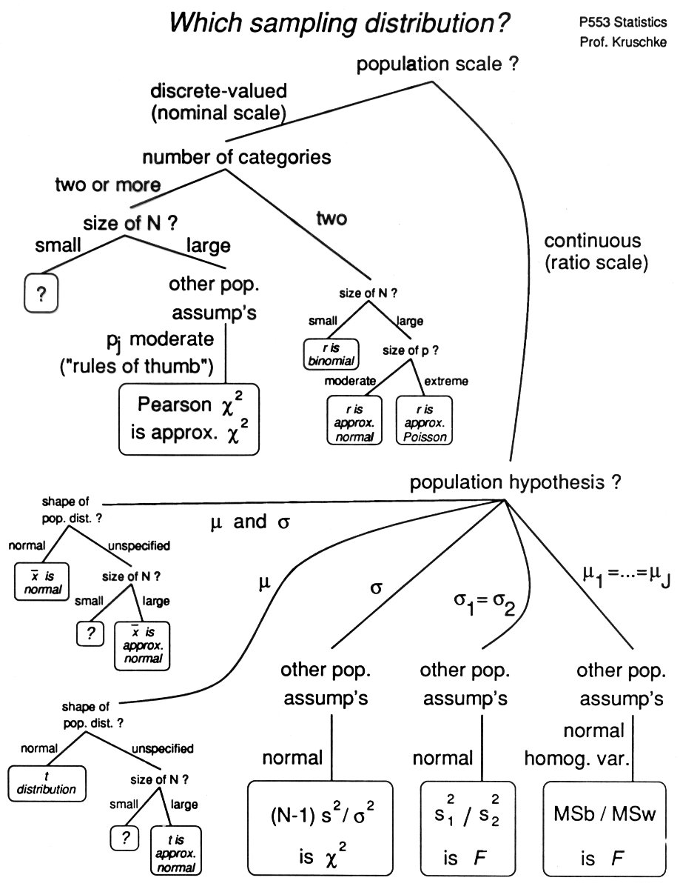

The sampling distribution of a sample statistic is determined by the constellation of hypotheses about the population from which the samples are drawn. Shown below is a "decision tree" which branches through various population hypotheses and ends up with corresponding sampling distribution implied by the hypotheses. Below the diagram is the same structure in the form of nested tables.
Not all hypotheses we studied are in the tree, and some topics we did not have time for are in the tree. For example, we did not have time to study tests of variance. But we did study cases when there are two dependent variables as in Pearson correlation (continuous variables) and chi-square tests of independence of attributes (nominal variables); these cases are not shown in the decision tree. Could you add branches to the tree to accommodate these cases?
Notation:
| mu | is the population mean. |
| sigma | is the population standard deviation. |
| rho | is the population correlation. |
| N (or N or N) | is the sample size |
| M | is the sample mean. |
| t | is the sample t value, where t = (M-mu)/[sqrt(SS/df)/sqrt(N)]. |
| S^2 | is the unbiased sample variance, SS/df. |
| r | is the sample correlation. |
| p (or p) | is the population probability for a corresponding category. |
|  |
| Population Scale Type? | |
| continuous (ratio scale) | discrete (nominal scale) |
| continuous (ratio scale) | ||||||||||||||||||||||||||||||
| Population Hypothesis? | ||||||||||||||||||||||||||||||
| mean = mu, variance = sigma^2 |
mean = mu | mean_1 = mean_2, normal, homog. |
mean_i = mean_j, normal, homog. |
rho = 0, normal, homog. |
var_1 = var_2, normal |
var = sigma^2, normal |
||||||||||||||||||||||||
|
|
[(M1 - M2) - (mu1 - mu2)] / S_dif is tabled t |
MSb / MSw is tabled F |
convert r to tabled t |
S^2_1 / S^2_2 is tabled F |
(N-1) S^2 / sigma^2 is tabled chi^2 |
||||||||||||||||||||||||
| discrete (nominal scale) | |||||||||||||||||||||||||
| Number of Categories? | |||||||||||||||||||||||||
| two | two or more | ||||||||||||||||||||||||
|
| ||||||||||||||||||||||||
Copyright © 1996 John K. Kruschke